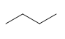

Evolución de la Representación en Q.O
John Dalton → Jöns Jacob Berzelius: símbolos y fórmulas de composición
Qué / quién: John Dalton inició el uso de símbolos para átomos (círculos con marcas) a principios del s. XIX; Jöns J. Berzelius simplificó eso a letras (H, C, O, etc.), que permitieron escribir fórmulas compuestas (ej. H₂O).
Cómo / por qué: La química analítica empezaba a producir proporciones elementales y se necesitaba una notación breve y estándar para comunicar "qué elementos y en qué proporción" hay en una sustancia. Berzelius cambió símbolos pictóricos por letras (basadas en nombres latinos), lo que hizo posible escribir fórmulas empíricas y moleculares.
Ejemplo:
Óxido férrico: Fe₂O₃
Edward Frankland: concepto de valencia (saturación de enlaces)
Qué / quién: Edward Frankland formalizó la idea de que los átomos tienen una capacidad fija de combinarse (valencia).
Cómo / por qué: Antes se conocían proporciones pero no por qué ciertos átomos se unen con un número determinado de vecinos. La noción de valencia posibilitó representar conectividad (quién se une a quién) en lugar de sólo proporciones.
Consecuencia directa: Abrió la puerta a dibujar enlaces (líneas) entre átomos y distinguir compuestos con la misma composición pero diferente organización (isómeros).
Archibald S. Couper y August Kekulé: las primeras fórmulas estructurales
Qué / quién: Archibald Scott Couper (Escocia) y casi simultáneamente varios químicos (incluido Kekulé) propusieron la idea de que el carbono es tetravalente y puede formar cadenas; Kekulé (1865) propuso la estructura en anillo del benceno.
Cómo / por qué: Al aparecer isómeros con idéntica composición pero propiedades distintos, resultó imprescindible una notación que mostrara la conectividad entre átomos (líneas que unen átomos). Couper incluso ideó un lenguaje simbólico para mostrar enlaces carbono-carbono; Kekulé introdujo el anillo del benceno (la representación cíclica).
Ejemplo:
vs
CH₃-O-CH₃ (dimetil éter)
Ambos con fórmula molecular C₂H₆O pero diferente conectividad
Fórmulas desarrolladas y semidesarrolladas (condensadas)
Qué: Para moléculas más largas la representación completa (cada enlace) se volvió engorrosa; se generalizaron formas condensadas/semidesarrolladas (p. ej. CH₃CH₂CH₂OH).
Cómo / por qué: Necesidad práctica: expresar estructuras con menos espacio y más rapidez manteniendo la conectividad básica. Esta forma es intermedia entre "fórmula molecular" (solo composición) y "estructura completa" (todos los enlaces dibujados). (Evolución gradual en publicaciones y libros a fines del s. XIX / principios del XX).
van 't Hoff & Le Bel: estereoquímica y la representación 3D (tetraedro del carbono)
Qué / quién: Jacobus H. van 't Hoff (Holanda) y Joseph Le Bel (Francia) propusieron independientemente que los cuatro enlaces del carbono se disponen de forma tetraédrica.
Cómo / por qué: Explicaba la existencia de isómeros ópticos (enantiómeros) que no podían entenderse solo por conectividad plana. Fue la razón científica por la que había que introducir notaciones capaces de reflejar orientación espacial (no solo "quién se une a quién").
Impacto en representación: aparecen convenciones de cuña/guión y proyecciones (ver más abajo) para mostrar configuración absoluta y relativa en 3D.
Emil (Hermann) Fischer: proyección de Fischer (para carbohidratos y quirales)
Qué / quién: Emil Fischer diseñó una manera sistemática de proyectar moléculas con muchos centros quirales —la proyección de Fischer— particularmente útil para azúcares.
Cómo / por qué: Los azúcares tienen varias centros quirales; representarlos en perspectiva tetraédrica era tedioso. La proyección de Fischer "plana" mantiene la cadena principal vertical y codifica la quiralidad usando horizontales (grupos hacia el observador) y verticales (grupos hacia atrás). Así se facilitó comparar configuraciones (D/L) y definir relaciones estereoquímicas.
Nota histórica: Fischer (Nobel 1902) fue químico orgánico destacado en estructuras de azúcares y purinas.
H—C—OH
HO—C—H
H—C—OH
H—C—OH
CH₂OH
(D-glucosa en proyección de Fischer)
Estructuras de Lewis: electrones como puntos, enlaces como pares
Qué / quién: Gilbert N. Lewis publicó The Atom and the Molecule (1916), proponiendo dibujar electrones de valencia como puntos y enlaces como pares compartidos.
Cómo / por qué: La representación necesitaba incluir electrones para explicar reactividad y tipos de enlace (simple, doble, carga formal). Las estructuras de Lewis formalizaron la idea del par de electrones compartido como enlace y permitieron razonar sobre mecanismos y resonancia.
Consecuencia: base conceptual para muchas notaciones posteriores (estructuras resonantes, reactividad ácido-base, etc.).
·· ·· ··
H—C≡N: (cianuro de hidrógeno)
Proyecciones y conformaciones: Fischer → Haworth → Newman → sawhorse
Qué / quién: Haworth desarrolló proyecciones cíclicas (azúcares) para visualizar anillos y Newman (Melvin S. Newman) introdujo la proyección de Newman (1952) para visualizar conformaciones alrededor de un enlace C–C.
Cómo / por qué: La proyección de Newman permite ver ángulos diedros y distinguir conformaciones (anti, gauche, eclipsada), algo que ni una representación de Fischer ni una esqueleto plano muestran claramente. Haworth facilita representar anillos con el plano mejor que una simple línea. Estas proyecciones resolvieron necesidades concretas: conformación y energía asociada a la rotación.
Símbolos de estereo y cuña/guión; Giulio Natta y convenciones modernas
Qué / quién: Convenciones gráficas para indicar orientación (cuña sólida hacia el frente, trazos discontinuos hacia atrás) se consolidaron alrededor de las décadas de 1930–1940; Giulio Natta popularizó variantes en polimerología. Richard Kuhn y luego Natta, Cram y Hammond ayudaron a estandarizar el uso.
Cómo / por qué: Al aumentar la síntesis de compuestos complejos y polímeros, fue necesario un código gráfico unívoco y compacto para indicar estereoquímica en documentos y patentes.
Cuña discontinua (⫶) = hacia atrás
Línea continua (─) = en el plano
Fórmula esquelética / line-angle (abreviatura moderna)
Qué: La fórmula esquelética (line-angle) se consolida: vértices y extremos representan carbonos, se omiten H ligados a C y se dibujan heteroátomos explícitos.
Cómo / por qué: Para manejar moléculas orgánicas grandes (polímeros, fármacos, naturales) se necesitaba la notación más compacta y legible en síntesis y publicaciones; además las revistas y software la adoptaron. Se la puede ver como una evolución natural desde las estructuras de Kekulé/Lewis hacia abreviatura eficiente.

Normalización (IUPAC) y representación digital (software 2D/3D)
Qué / quién: IUPAC publica guías técnicas y "brief guides" que recogen convenciones (nombres, localizadores, cómo indicar estereoquímica) y los programas (ChemDraw, Jmol, Avogadro, RDKit) permiten dibujar/convertir automáticamente entre notaciones 2D/3D.
Cómo / por qué: La explosión de sustancias nuevas (millones de compuestos) exigió reglas estándar y herramientas para intercambio de estructuras, verificar nombres, y generar imágenes 2D/3D reproducibles en papers, bases de datos y software.
Resumen: Por qué evolucionó la representación
- Símbolos (Berzelius): para decir "qué" hay.
- Valencia (Frankland): para justificar enlaces.
- Fórmulas estructurales (Couper/Kekulé): para mostrar "quién conecta con quién".
- Lewis (1916): para incluir electrones y reactividad.
- Van 't Hoff / Le Bel y Fischer: para explicar y representar en 3D y la quiralidad.
- Newman / Haworth / proyecciones: para conformaciones y anillos.
- Esqueleto & cuñas (s. XX): para abreviar y estandarizar; hoy IUPAC + software.